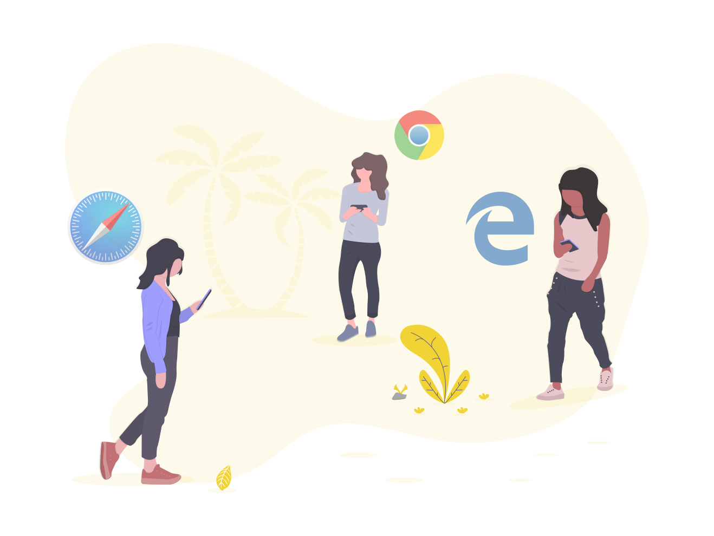
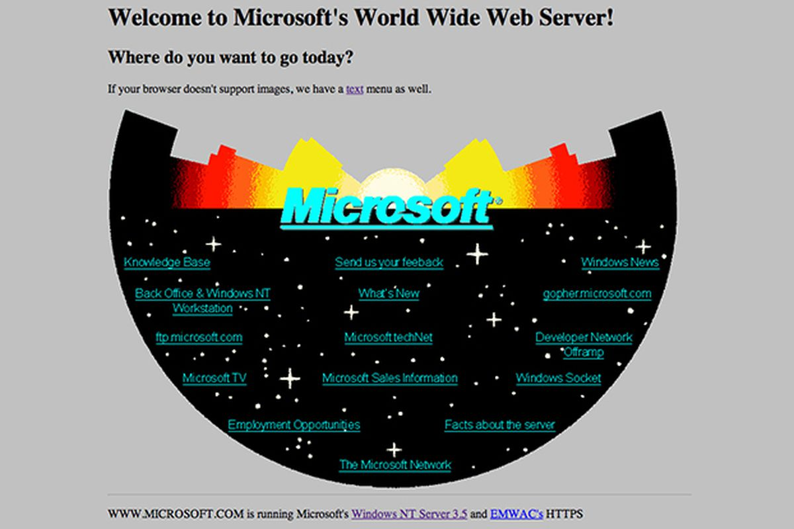

The Invention of Internet
Learn about how and why the internet, the invention of the century, was created.


Emilia Ton
Dec 18 2020 - 5 min read
Learn about how and why the internet, the invention of the century, was created.
Dec 18 2020 - 5 min read
After the birth of the world wide web in 1989, it was clear that the internet will be the next big thing, a worldwide phenomenon carrying a trillions of dollars of commerce. However, in 1992, there were still only 50 web pages on the internet. If the World Wide Web made the internet more accessible. Another development rocketed it to near instantaneous acceptance by people far and wide this was a very user friendly software used to browse the World Wide Web. It was 1993, at the NCSA at University of Illinois, Marc Andreessen and a team of students and researchers introduced NCSA Mosaic to the mass public. Mosaic offered a user-friendly way to search the Web: It allowed users to see words and pictures on the same page for the first time and to navigate using scrollbars and clickable links.
Marc was later contacted by James H. Clark, a notable Silicon Valley investor, entrepreneur and computer scientist. He was looking for his next big investment and the idea of an universally accessible browser caught his eyes. They later went on to found Netscape Communications Corporation (originally Mosaic Communications Corporation), where Netscape Navigator was created. It was an instant runaway success. The web was spreading like a wildfire around the globe. The Internet age had truly begun.
Netscape went public after just one year of establishment. On the day of the IPO Netscape stock went through the roof, igniting the internet boom that would rage for the rest of the decade. James Clark invested 5 million dollars into Netscape and made 663 million dollars on the day of the IPO closing. Andressen then went public to show his stance on the rivalry with Microsoft, preferring to the company’s most important product Windows as “a set of poorly debug device drivers”.
At the time, Microsoft was the most important and fantastically profitable high tech company of them all. After two decades Microsoft had established a near monopoly over PC operating systems and it used that monopoly to gain a vice-like grip over the entire computer industry. About 90% of the world's PCs were running Microsoft Windows; this spectacular success had turned Microsoft into a veritable money machine raking in billions of dollars in profits and turning thousands of Microsoft employees into stock option millionaires. Bill Gates thought that the information highway should be a toll road, on which Microsoft controlled all the toll booths, we would all have to pay to drive. A future where the browser could be an alternative platform where you could carry out all your computing needs online thereby leveling the playing field is suddenly becoming possible.
A meeting was conducted between a team from Microsoft and Netscape taking place in Netscape the headquarters in the valley. It remains one of the most controversial meetings in modern business and is still a subject of intense and bitter debate. According to Microsoft, it was more of a Joe easygoing meeting with free roaming discussions. But Netscape's version of events was just a little bit different as Microsoft came in and offered to buy all of their technology for 1 million dollars or they would drive Netscape out of business. Some may suspect there was a violation of the US Antitrust Law.

Gates had pulled out all the stops pouring millions of dollars into the web and turning Internet Explorer into a do or die cause at Microsoft. Suddenly, Netscape was about to find themselves in the world of troubles. Despite Netscape's headstart Microsoft's Internet Explorer team had some real advantages with vast financial resources and reserves of coding talent and a leader of Bill Gates. Microsoft's plan was straightforward: analyze Netscape's every move and imitate it, release version after version of Internet Explorer and slowly chip away at Netscape's lead in browser market share one percentage point at a time. The engineering team was going all out working as if their lives depended on it. At the same time, Microsoft’s army of silent salesmen had a mission, to stop PC manufacturers from installing anything other than Internet Explorer. As both companies went head-to-head with version after version of their browsers the market share of Internet Explorer steadily grew and Netscape’s started to drop. Rather than charging money for its web browser his Netscape had to Microsoft was able to give Internet Explorer away for free bundled and seamlessly integrated into the Windows operating system, and that was a fatal hit for Netscape.
From that point on, it was all downhill for Netscape. A year later its market share now and single figures and dwindling. The company that ushered in the Internet age was acquired by a bigger but slower company, AOL.
In 1998, the United States Department of Justice prodded by Microsoft's enemies in Silicon Valley and particularly by Netscape launched a historic antitrust lawsuit against Bill Gates's company. The government has accused Microsoft of using its Windows monopoly to engage in a wide variety of predatory and exclusionary business practices to prevent consumers from accessing Netscape's products and thus to put the pioneering start up six feet under. Federal judge in charge of the Microsoft case issued his final verdict as guilty. Microsoft’s stock market value to plunge by thirty billion dollars overnight. Gates handed over the CEO chair to his partner Steve Balmer and began to focus more on his philanthropic works.
Although Microsoft won the browser war, the revolution sparked by Netscape unleashed a new generation of startups companies like Google that have made Microsoft look old and clueless. A lesson of the high tech world has been proven true and even the most powerful empires to disappear in one click.